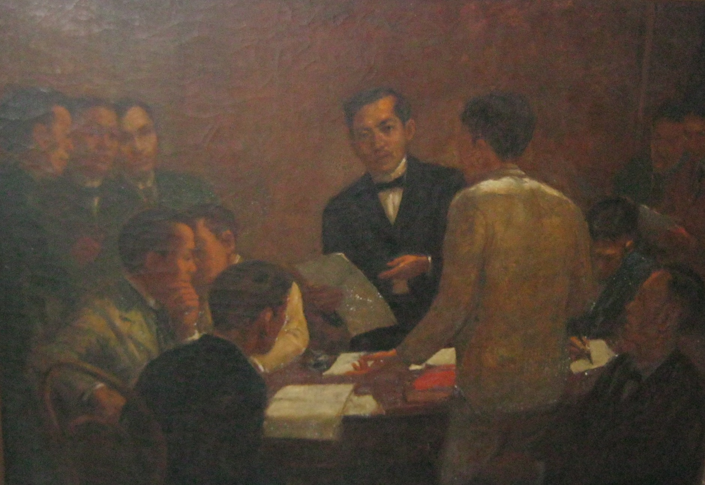

Jose Rixal's Legacy
After his death, the Philippine Revolution continued until 1898. And with the assistance of the United States, the Philippines declared its independence from Spain on June 12, 1898. This was the time that the Philippine flag was waved at General Emilio Aguinaldo’s residence in Kawit, Cavite. The legacy of Rizal does not only ends in his writings but also his intellectual briliiance for aking a stand and resisting the Spanish colonial government.
His Novels that Awakened Philippine Nationalism. Especially his great two novels that are continuously being analyzed by students and professionals.
His Compassion, courage. and patriotism are greatly remembered and recognized by the Filipino people.

His advocacy to achieve liberty through peaceful means rather than violent revolution.
Jose Rizal's Works
Noli Me Tangere
Novel
Noli Me Tángere (translated as Touch Me Not) follows the story of Crisostomo Ibarra and his journey to overthrow the Spanish colonizers. Mirroring the harsh realities Filipinos experiencedunder the Spanish rule.

El Filibusterismo
Novel
The sequel to Rizal’s Noli me Tángere, 13 years after that prison escape, we now follow Ibarra disguised as Simoun, a wealthy jeweller here in El Filibusterismo (translated as The Reign of the Greed).
To the Young Women of Malolos
Novel
Rizal shows his impression and admiration to the young women of Malolos who showed commendable spirit in achieving the same opportunities enjoyed by men in terms of education during that time.
The Diaries of Jose Rizal
Novel
Rizal’s letters is a collection of his insights in the form of diaries. Such entries and letters to his family provides an introspective view of our hero. The diaries cover various periods of Rizal’s life, including his travels in Europe.
Goodbye to Leonor
Novel
In his farewell poem entitled ‘Goodbye to Leonor,’ Rizal expressed his agony and grief upon knowing that his childhood sweetheart Leonor Rivera tied the knot with Henry Kipping, a British railway engineer.
Multi Ultimo Adios
Novel
My Last Farewell’ is a poem written by Rizal the eve of his execution. This bittersweet letter emphasizes the hero’s undying love for his country, serving as a sacrifice to achieve freedom. He acknowledges the sacrifices made by Filipinos in their struggle for independence.